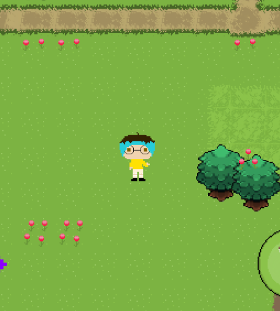

Mes projets :
Projet visant à reproduire une jeux avec les graphismes des premiers mario.
Avec les mêmes fonctionnalités au niveau des champignons, tuyaux, piéces et niveaux.
Réalisé sur Godot, au cours de notre deuxième Code Camp, ce projet avais pour but de créer un jeux se basant sur le système de rogue like.
En utilisant les personnages de l'univers zelda, nous avons crée un jeux qui se joue tour par tour dans notre terminal après avoir mancé le fichier.sh.
Sur le thème de Genshin Impact, nous avons crée un clicker game pour nous familiariser avec javascript.

Ce projet en developpement mobile est le premier que nous avons fait, nous devions reproduire le principe de trip advisor mais pour les restaurants.